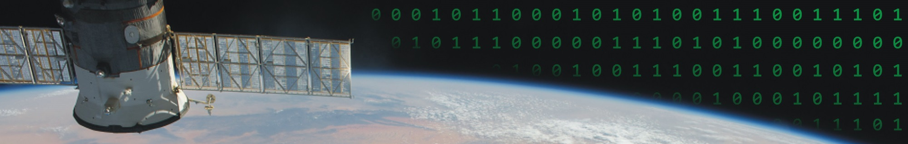

Ricardo Borsoi CNRS researcher Scholar profile Github projects |

About meI'm currently a CNRS researcher in the University of Lorraine working with signal processing algorithms and machine learning, with image processing applications. In this webpage (still under construction), you can find some description of the research problems I've been working on and the PDF files of published papers and preprints. The LoRAINNe’24 workshopWe are organizing the workshop on LOw-Rank Approximations and their Interactions with Neural NEtworks (LoRAINNe’24) in Nancy, France, the 26th and 27th of November, 2024. This workshop will explore low-rank matrix and tensor decompositions/approximations and their interactions with neural networks and machine learning at large. The workshop will cover theoretical foundations as well as practical applications, with the main goal to connect researchers working in these fields. Looking forward to seeing you in Nancy! Open positionsThere are multiple positions open in our team, with topics including tensor decomposition, fMRI data fusion, spatiotemporal data analysis, and deep generative models and unsupervised learning. See the LENTILLE and AGDAM project pages for details; open positions in our team are currently being advertised at: https://cran-simul.github.io/jobs/. Research InterestsCurrent research interests are centered in signal and image processing and machine learning, in particular:
For more details, see the Research/Publications page. |